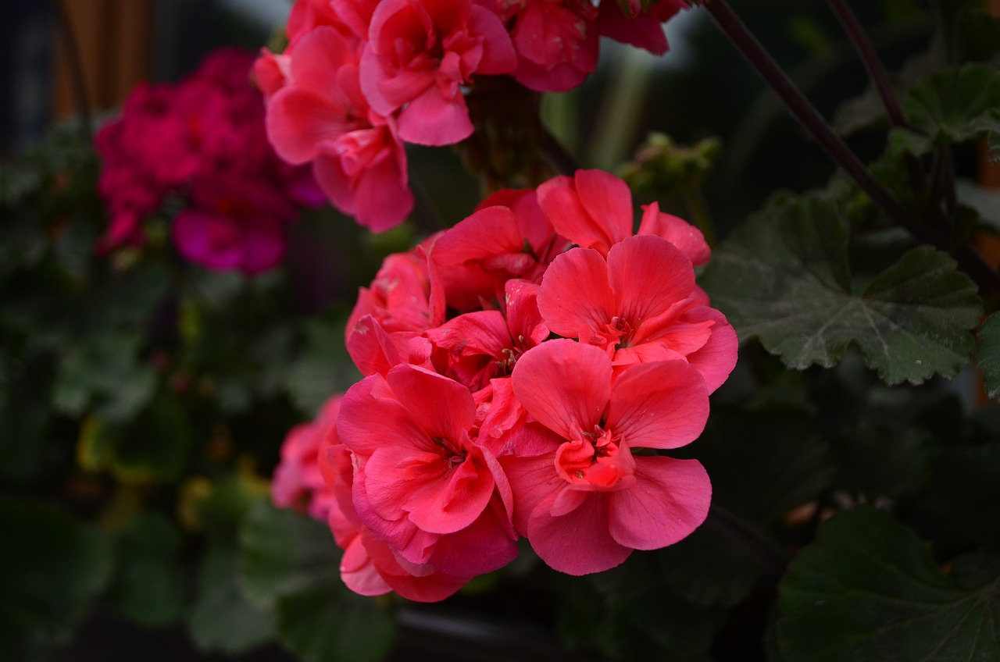
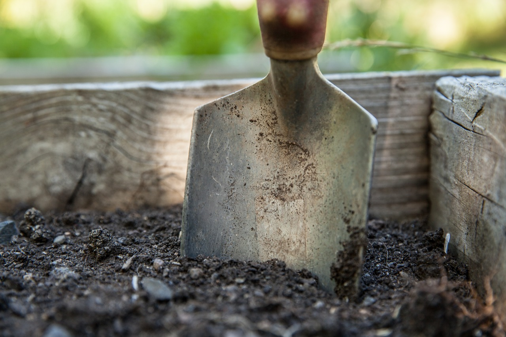

Inicio
Contacto
Nosotras
Tips comunidad
Identificador
Para plasmar tus proyectos vegetales en tierra firme
¿En qué te podemos ayudar?

Identificador de plantas!
Hace click acá y utilizá nuestro buscador para saber de tu planta y sus ancestros: cuanto más sabés, mejor para vos y para ella!
Ayuda, tengo un problema!
Luz, suelo, agua, bichos y otros pueden ser un obstáculo en la salud de tu planta. Hacé click en la imagen y descubrilo!

Tips útiles
Vení a conocer otras grandes ayudas brindadas por nuestros amigos para la salud de tus plantitas.